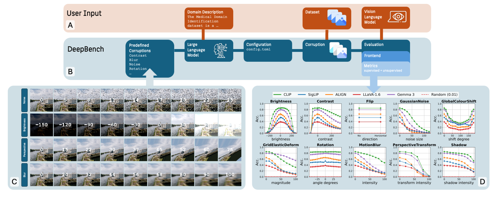
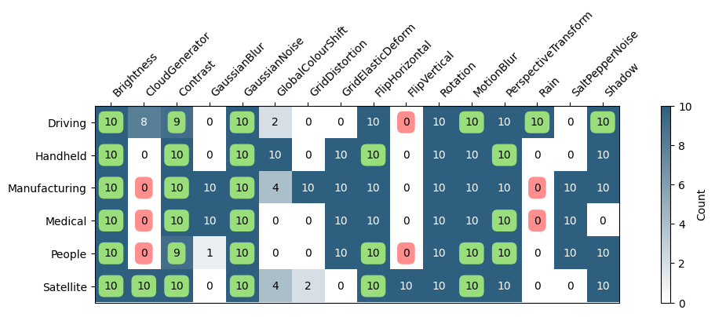

Graphical Abstract

Highlights
- DeepBench uses LLMs to automatically generate domain-specific corruptions.
- We benchmark five VLMs and their variants across six real-world domains.
- Domain-specific fine-tuning increases clean accuracy but can reduce robustness.
- Larger ViTs and curated pretraining data yield greater resilience to corruption.
- Label flip probability provides a reliable, annotation-free robustness proxy.
Abstract
Robustness evaluation of computer vision and vision-language models (VLMs) remains a critical challenge, particularly when models are deployed in domain-specific settings that differ significantly from their training distributions. While existing benchmarks target generic corruptions or adversarial attacks, they offer limited insight into how models perform under realistic visual conditions, such as lighting variability in handheld photography or anatomical variation in medical imaging. Additionally, the increasing reliance on large pretrained foundation models with opaque data pipelines complicates the analysis of potential failure modes. In this work, we introduce DeepBench, a framework for evaluating domain-specific robustness without requiring labeled data. Given a high-level description of the deployment environment, a large language model (LLM) selects a context-relevant corruption set that simulates expected visual variability. The framework supports both standard accuracy-based metrics and an unsupervised measure of prediction consistency, the label-flip probability (LFP), enabling robustness analysis even in data-scarce applications. We systematically benchmark five popular VLMs—CLIP, SigLIP, ALIGN, LLaVA, and Gemma—across six real-world domains. Our results show that robustness and performance vary significantly by use case: no single model dominates across all domains. These findings underscore the importance of domain-specific evaluation, which captures failure modes that generic robustness benchmarks may overlook. Furthermore, we validate LFP as a reliable proxy for accuracy under corruption, supporting its use in label-free settings. We release our framework as open-source software on GitHub.
Corruptions
Severity Levels
Use Cases
DeepBench covers six application scenarios—Medical, Driving, Manufacturing, People, Satellite, and Handheld—spanning diverse imaging conditions and robustness challenges. New scenarios can be added by providing a short domain description; an LLM translates it into a tailored set of corruption transformations.
RQ1: Can LLMs Generate Consistent and Context-Aware Corruption Strategies?
Answer: Across a broad set of open- and closed-source LLMs, corruption strategies remain largely consistent and domain-appropriate. Several models across different sizes and architectures produce fully plausible selections, while others show occasional deviations. Performance does not follow a simple trend with model scale. Among these models, GPT-4o provides fully consistent selections and is used as the reference for downstream robustness experiments. Setup: We evaluated corruption-selection behavior across eleven LLMs: closed-source (GPT-4o, GPT-4o-mini), open-source large (GPT-OSS-120B, Qwen2.5-110B, Llama-3.3-70B, DeepSeek-R1-70B), and open-source medium/small (Gemma-3-27B, Llama-4-Scout-17B, Phi-4-14B, Qwen2.5-8B, Mistral-8x7B). Each model produced 10 sampling runs per domain using different seeds. Final corruption sets were obtained by majority vote and checked against domain-specific whitelist/blacklist constraints encoding expert prior knowledge. Results: GPT-4o, Llama-3.3-70B, and Llama-4-Scout-17B exhibit zero violations, demonstrating fully domain-consistent behavior. Performance does not correlate with scale: some large models (e.g., DeepSeek-R1-70B) show more violations than mid-size models such as Gemma-3-27B or Phi-4-14B. The mixture-of-experts Mistral-8x7B shows the highest number of violations. Core transforms (Brightness, Contrast, ImageRotation) are selected consistently across domains, while domain-specific choices (e.g., CloudGenerator for Satellite, Rain for Driving) demonstrate contextual adaptation.
Corruption Selection Frequencies (GPT-4o)

RQ2: How Robust Are Foundation VLMs to Domain-Specific Corruptions?
Answer: No single VLM is universally robust. CLIP shows the strongest average corruption robustness, Gemma follows closely, and LLaVA achieves the lowest flip rate. Robustness still varies substantially across domains and corruption types, underscoring the need for domain-specific evaluation. Setup: We evaluate five pretrained VLMs (CLIP, SigLIP, ALIGN, LLaVA, Gemma) in zero-shot across six real-world domains, each with its domain-specific corruption set and multiple severity levels. We report balanced accuracy and label flip probability.
RQ3: Is Domain-Specific Fine-Tuning Beneficial for Robustness?
Answer: Fine-tuning on a specific domain can boost clean performance on that modality but may reduce robustness to corruptions. Setup: We compare general-purpose VLMs to domain-specialized variants in two domains—Medical and Satellite—using their respective corruption sets, reporting clean accuracy and flip-based robustness.
RQ4: How Does Model Architecture Affect Robustness?
Answer: Transformer-based models with higher capacity tend to show stronger robustness to domain-specific corruptions; smaller patch sizes have mixed effects. Setup: We compare CLIP variants across architecture (ResNet vs. ViT), patch size, input resolution, and activation, all trained on the same OpenAI dataset. Models are evaluated across the six domains with their domain-specific corruption sets; we report balanced accuracy and label flip probability per domain and corruption.
RQ5: How Does Pretraining Data Influence Robustness?
Answer: Models pretrained on curated, semantically aligned data generally achieve higher accuracy and enhanced robustness compared to those trained on larger, noisier corpora. However, the OpenAI baseline, while often weaker, can become the top performer when its proprietary training data is highly aligned with the target domain, as seen in People. Setup: To isolate the effect of pretraining data, we evaluate CLIP ViT-L/14 models trained on five distinct datasets representing a spectrum of data collection philosophies: LAION-400M (Schuhmann et al., 2021) and MetaCLIP FullCC (Xu et al., 2024) as large-scale, minimally filtered web scrapes; CommonPool and DataComp XL (Gadre et al., 2023) and DFN2B (Fang et al., 2023) as corpora prioritizing high-quality, semantic image-text alignment; and OpenAI (Radford et al., 2021) as a proprietary baseline. All models are evaluated under domain-specific corruption sets across six application domains. Results: Curated datasets consistently outperform larger, noisier corpora in both clean accuracy and mean corruption error (mCE). For instance, CommonPool achieves top-tier performance in Driving and Manufacturing, while LAION-400M lags behind with a notable robustness deficit in Medical. A critical exception is People, where the OpenAI baseline surpasses all other models, highlighting that domain-specific alignment of pretraining data can be more decisive than general data quality or scale.
RQ6: Can Robustness Be Reliably Evaluated Without Labeled Data?
Answer: Yes, label flip probability (LFP) is a reliable proxy for robustness, correlating strongly with balanced accuracy across all tested domains. Setup: We evaluate five pretrained VLMs across six domains using domain-specific corruptions, comparing supervised balanced accuracy (Acc) to unsupervised LFP per corruption and severity, and compute Pearson correlation between Acc and LFP. Results: Across all model–domain–corruption combinations, Acc and LFP show a strong inverse correlation (global r ≈ −0.90). Correlations are consistently negative across domains (median r ≈ −0.92) and strongest in Driving and Satellite (r ≈ −0.99), confirming LFP as a robust label-free proxy.
Sources
How to Cite
This paper is currently under review.
@article{koddenbrock2026domain,
title={Domain-Specific Robustness Evaluation of Vision-Language Models},
author={Koddenbrock, Mario and Hoffmann, Rudolf and Brodmann, David and Rodner, Erik},
journal={Available at SSRN 5349659},
note={Under review}
}